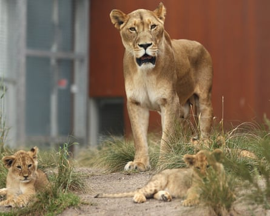

V isitors seeking a “prey’s eye view” can get within “clawing range” of lions at one Australian zoo. Or they can experience the “thrill of a lifetime” by standing near enough to a lion to feel its breath as they pass meat through the fence with kitchen tongs. “Want to feed a lion by hand?” You can do that too if you find the right zoo. Visitors can pay $150 to place meat directly on their palm and feed it to a hungry lion through the bars.
A visit to the zoo is usually considered a fun family day out, and lions are a popular drawcard. While details are not yet clear, the recent maiming of a woman related to the zoo owner in a staff-only area at Darling Downs zoo at the weekend has offered a stark reminder that lions are held in facilities across the country, and encounters with the apex predators can come with risk.
- Sign up for Guardian Australia’s breaking news email
Zoos can be an important part of conserving the lion as species, officially classed as “vulnerable”, but public fascination with the powerful big cats means they have been the centrepiece of zoos and public spectacle centuries before their status in the wild declined. Lions have been kept in captivity since the Roman empire, skulls belonging to lions have been unearthed in the Tower of London – believed to have been part of the royal menagerie 700 years prior – and in the 1800s live lions were shipped over the oceans to entertain the colonists in Australian zoos. Wallace, one of Melbourne Zoo’s first lions, was famous for his love of classical gramophone music.
‘When people think of zoos, they often think of the big cats – tigers and lions,’ says Dr Eduardo J Fernandez.Photograph: Australian Associated Press/Alamy
Today these kings of the jungle can be found at wildlife parks dotted around Australia – from the famous big city zoos and their open air counterparts to the south coast of New South Wales, the Darling Downs of Queensland and the Victorian Alps. Which begs the question – just how many lions are there in Australia? And how well are the facilities they are kept in being regulated?
‘You obviously have to maintain safety’
“When people think of zoos, they often think of the big cats – tigers and lions,” says Dr Eduardo J Fernandez, animal behaviour program director at the University of Adelaide and an expert in the family felidae , which includes the big cats.
There are about 100 lions in Australian zoos, according to Zoos and Aquarium Association Australasia (ZAAA), along with other big cats.
Fernandez says standards and protocols – like those covered by the ZAAA accreditation – are critical for both animal welfare and safety, particularly for “any animal that poses potential danger”, which is every species of big cat.
Accreditation for ZAAA, is a self-assessment process. There are now between 75 and 80 accredited operations in Australia, but ZAAA estimates about 200 licensed animal facilities in the country, which range from wildlife shelters and hospitals to zoos, wildlife parks and aquariums.
“The better zoos in Australia will be part of the [ZAAA] accreditation scheme,” says Assoc. Prof Alex Whittaker, an animal welfare law expert at the University of Adelaide.
However, she says, national species-specific regulation or guidance is limited. And while national standards for the care of exhibited animals were endorsed by governments in 2019, they have not yet been adopted across all jurisdictions.
Research shows the public prefers to see animals kept in modern enclosures with naturalistic exhibits.Photograph: Cameron Spencer/Getty Images
The rules and oversight of facilities keeping dangerous animals varies by state and territory. In addition to its own zoo-specific laws, NSW sets minimum standards for exhibiting carnivores, including specifications for lion enclosures – fences at least 4.5m in height with 5mm mesh. Similar, but slightly different, rules apply in Victoria .
Will Meikle, a zoo animal welfare expert was involved in developing NSW laws and standards that regulate the keeping of exotic animals. “From a physical perspective, you obviously have to maintain safety of staff and visitors to the facilities and ensure that the animals are able to be safely held in captivity that they’re not going to escape.”
But, even carefully designed enclosures aren’t impenetrable. In 2022, five lions escaped their enclosure at Sydney’s Taronga zoo, forcing visitors to hide in safe zones and triggering a review of zoo safety. Later, footage showed the animals managed to scratch and break through a security fence.
‘People want to feed the animals’
Many zoo websites – from large, publicly funded institutions to small regional wildlife parks – promote paid encounters offering the chance to “hand feed” lions and other dangerous carnivores. Such closeup encounters are common at zoos worldwide and considered safe, with 75% offering some sort of human-animal experience, according to a 2019 study .
“There’s a real interest by people who want to feed the animals,” says Meikle. “If people can’t feed the animals, they want to see somebody feeding the animals, and they want to interact with the animals as much as they can.” These sorts of experiences would usually be covered by an internal operating procedure rather than regulation, he says.
Fernandez, who has written a book on zoo animal-visitor interactions, says these could be positive from a welfare perspective, but their outcomes are rarely assessed.
“It’s critical that we evaluate the impact, because there are many instances of different types of interactions that can be good for the welfare of the animal [and] be enriching. But there’s also many instances, historically, that have been detrimental.”
And there is evidence the public is deeply concerned about animal wellbeing.
In 2020-21, researcher Dr Janice Vaz surveyed 375 people, including 164 Australians, for their views on big cats in zoos.
She found the public preferred to see animals kept in modern enclosures with naturalistic exhibits, suggesting a deeper concern for animal welfare and generally disapproved of direct interactions like feeding or playing with clubs.
Zoos use enrichment activities to mimic aspects of foraging behaviours, says Fernandez.Photograph: Imago/Alamy
“It can be a hard task even for people caring for their own house cats to get right, let alone trying to meet the needs of a wild, 130kg+ carnivore,” says feline behaviour researcher, Julia Henning.
“Lions have evolved to be excellent hunters, and this behaviour is hard wired into them. This means that it is not enough to simply provide them with food, they require an ability to express the behaviours they would usually associate with the food such as hunting, stalking and ambushing.”
Zoos use enrichment activities to mimic aspects of foraging behaviours, like carcass feeding, says Fernandez, but constantly evaluating and adapting practices is essential .
There are limitations , and huge variation in the quality of the environment and enrichment provided. Recreating the natural environment is ideal, but a challenge. Fernandez says generally, as lions are a social species, it is good to have a pride of lions held together. In the wild, a lion’s home range might extend to 10,000 hectares. The largest enclosure in Australia, at South Australia’s Monarto Safari Park, is 11-hectares, while the minimum size in Victoria and NSW is 200 to 300 metres-square.
‘Inherent risks’
Incidents, while extremely rare, do occur.
“There are inherent risks when working with wildlife and certain behaviours can be unpredictable, however zoos and aquariums have policies in place to minimise these risks,” a ZAAA spokesperson says. “The sector is continuously improving its standards, and incidents like this [the 6 July incident] will be followed with careful review.”
A Biosecurity Queensland spokesperson says authorised animal exhibitors are expected to manage risks with exhibited animals, and the department was “working to gather further information related to the incident”. Workplace Health and Safety Queensland is also investigating.
All incidents should provoke “deep consideration” of how we “house, treat and interact with animals in our care”, says Henning.
“It should prompt zoos and other organisations to question the need for their encounters.”